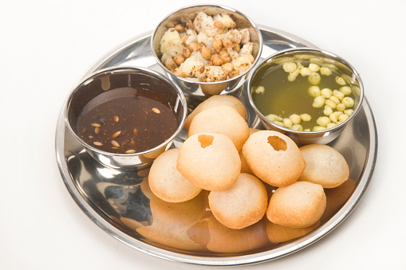

Panipuri

Description:
Panipuri is a type of snack that originated in the Indian subcontinent, and is one of the most common street foods in Indian subcontinent.
Panipuri consists of a round or ball-shaped, hollow puri (a deep-fried crisp flatbread), filled with a mixture of flavored water (known as imli pani), tamarind chutney, chili powder, chaat masala, potato mash, onion or chickpeas.
Ingredients:
- 8 puris (ready-made or homemade)
- 1 medium onion finely chopped
- 1/2 cup Sev
- 1/4 cup date tamarind chutney
- 1/2 cup mint leaves
- 3 medium sized boiled potatoes (peeled and mashed)
- 1/2 cup boiled black chickpeas
- 1/2 cup corriander leaves (chopped)
- 1-2 cups green chilli(chopped)
- 1/2 inch piece of ginger
- 1.5 medium sized lemons
- 3 tbsp sugar
- 1.5 tsp chaat masala powder
- 1/4 tsp black salt
- 1/2 tsp red chilli powder
- 1/2 tsp cumin corriander powder
- 4 tbsp Boondi (optional)
- salt to taste
- 4 cups of water
Steps:
Steps for Pani
- Rinse coriander and mint leaves in water and take all ingredients of pani.
- Add mint leaves, coriander leaves, green chillies, ginger & lemon juice in the small chutney jar of a grinder.
- Grind until smooth paste.
- Transfer them to a large bowl and add sugar, chaat masala, black salt & 4 cups of water. Stir with a large spoon and mix it with properly. Taste for the salt and add as required. Pani is ready; place it in refigeratorfor atleast 1 hour before serving or use it at room temperature. If you like soft boondi, mix it now. If you like crispy taste of boondithen mix it at the time of serving.
Steps for Masala:
- Take mashed potato, black chickpeas, red chilli powder, cumin-coriander powder, coriander leaves and salt in a bowl.
- Mix them together with a spoon. Masala is ready.
Steps to assemble Pani puri:
- Take each puri and gently make a large hole on it's top-middle side with a spoon or your index finger or thumb for stuffing.
- Stuff it with masala (more or less as you like). Sprinkler onion and sev over it and drizzle a drop of date tamarind chutney over it. Take pani-puri water in a medium bowl. Dip each puri in water.